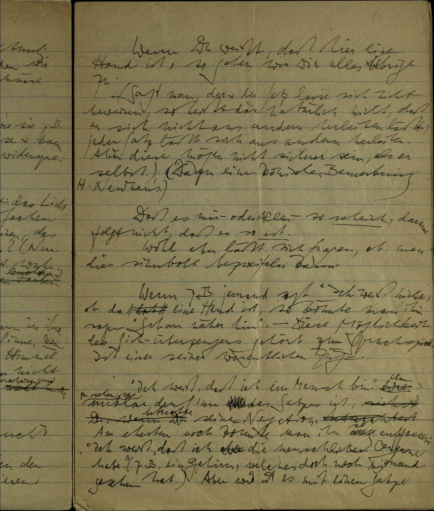

Wittgensteins Über Gewissheit und Moores Common Sense
1 Editionskritische Betrachtung der Textgrundlage
Wer Wittgensteins Über Gewissheit untersucht, muss zunächst die Textgrundlage kritisch betrachten. Die Buchausgabe vermittelt fälschlicherweise den Eindruck eines druckfertigen, publikationsreifen Textes. Das Faksimile des Manuskripts MS 172 offenbart jedoch die tatsächliche Beschaffenheit:

Der schwarze Mittelstrich im linken Drittel des Faksimiles weist darauf hin, dass die Seite im Manuskriptbuch rechts beginnt, während sich auch auf der linken Seite Text befindet. Die publizierten Paragraphen entstammen zwar diesen Manuskriptseiten, folgen aber keiner von Wittgenstein geplanten Struktur. Ein Vergleich des Faksimiles mit der publizierten Version bestätigt dies.
Für die präzise Interpretation erweisen sich die handschriftlichen Änderungen Wittgensteins als entscheidend. Das Faksimile dokumentiert beispielsweise, wie Wittgenstein “Geisteszustand” durchstrich und durch “Seelenzustand” ersetzte – eine Begriffsverschiebung, die die englischen Herausgeber in ihrer Übersetzung nicht berücksichtigten.
1.1 Moores These und Wittgensteins Auseinandersetzung
Der erste Satz von Über Gewissheit formuliert nicht Wittgensteins eigene Position, sondern bezieht sich auf G.E. Moore: “Wenn du weißt, dort, dass dies eine Hand ist, so geben wir dir alles Übrige zu.” Dieser Satz verweist direkt auf die Hauptthese aus Moores “A Defence of Common Sense.”
Eine genaue Interpretation muss drei Aspekte berücksichtigen:
- Der erste Paragraph zitiert keine eigenständige These Wittgensteins, sondern greift Moore auf
- Der Begriff “Common Sense” entzieht sich der vereinfachenden Übersetzung als “gesunder Menschenverstand” und verlangt nach präziser Bestimmung
- Die Klammerbemerkung im zweiten Paragraphen erfüllt eine spezifische argumentative Funktion
Wittgenstein entwickelte diesen Text schrittweise in seinen letzten vier Notizbüchern. Er beginnt unvermittelt mitten in einem Notizbuch ohne Titel oder Gliederungshinweise. Die Paragraphennummerierung der veröffentlichten Ausgabe fehlt im Original völlig.
2 Analytische Interpretation des ersten Paragraphen
2.1 Die “komische Bemerkung” und Newman
Der erste Teil des Textes verweist auf Henry John Newman, der in seinen Arbeiten zur “Grammatik der Zustimmungen” erforschte, wie Menschen Urteile bilden und zu Überzeugungen gelangen. Dies hilft entscheidend, den ersten Paragraphen zu verstehen.
Die Bezeichnung “komische Bemerkung” wirft die Frage auf, was “komisch” hier bedeutet. Eine mögliche, jedoch unzutreffende Interpretation versteht “komisch” als Hinweis auf eine beiläufige mündliche Äußerung (etwa: “Der war aber komisch gestern”). Wahrscheinlicher bezieht sich “komisch” auf eine tiefgründigere Bedeutung im Zusammenhang mit Newmans Schriften. Bemerkenswert bleibt: Neben dieser Stelle erwähnt Wittgenstein Newman in seinem Werk nirgendwo sonst.
2.2 Die dialogische Struktur des “Zugebens”
Der erste Satz führt ein grundlegend anderes epistemologisches Modell ein als die klassische individualistische Wissensdefinition. Wenn Wittgenstein formuliert: “Wenn du weißt […], so geben wir dir alles Übrige zu”, etabliert er eine dialogische, kommunikative Struktur mit mindestens zwei epistemischen Subjekten:
- Einem angesprochenen “Du”, dem Wissen zukommt
- Einem kollektiven “Wir”, das auf Grundlage dieses Wissens weitere Propositionen zugesteht
Diese Struktur weicht deutlich von der klassischen platonischen Wissensdefinition ab, die nur ein einzelnes epistemisches Subjekt vorsieht. Das “Zugeben” beschreibt eine epistemische Beziehung zwischen Personen und bricht mit herkömmlichen erkenntnistheoretischen Modellen.
Die Valenz des Verbs “zugeben” verdient besondere Aufmerksamkeit. Sprachlich erscheint “zugeben” im Deutschen typischerweise zweiwertig (ich gebe etwas zu) und seltener dreiwertig (ich gebe dir etwas zu). Die Formulierung “jemandem etwas zugeben” klingt ungewöhnlich und entstammt möglicherweise einer österreichischen Sprachvariante. Eine zweite Lesart versteht “zugeben” nicht primär als “admit” (eingestehen), sondern als “add” (hinzufügen), was eine semantische Mehrdeutigkeit eröffnet, die Wittgenstein vermutlich bewusst einsetzt.
Jeder Begriff in diesem ersten Satz erfordert sorgfältige Interpretation. Das “Zugeben” als interpersonaler Akt kontrastiert mit der klassischen Wissensdefinition, bei der die Person lediglich Überzeugungsträger bleibt (wie in “NN weiß, dass P der Fall ist” = NN glaubt, dass P wahr ist, und P ist gerechtfertigt). Stattdessen schafft der erste Satz in Über Gewissheit eine intersubjektive epistemische Beziehung: “Ich werde dir etwas zugeben”.
2.3 Die Doppelverneinung in der Klammerbemerkung
Die Klammerbemerkung “Dass sich ein Satz nicht beweisen lässt, heisst nicht, dass er sich nicht aus anderen herleiten lässt” dient einem wichtigen argumentativen Zweck. Sie thematisiert nicht in erster Linie Wittgensteins eigene Gedanken, sondern unterscheidet zwischen:
- Der Beweisbarkeit einer Proposition
- Der logischen Ableitbarkeit einer Proposition aus anderen Propositionen
Diese Unterscheidung weist auf ein Missverständnis hin, vermutlich bei Newman, bezüglich der logischen Eigenschaften jener Fundamentalsätze, die Moore anführt.
Vier verschiedene Interpretationen dieser Klammerbemerkung bieten sich an:
- Die Klammer drückt Wittgensteins vorläufige Überlegungen oder Unsicherheit aus
- Sie fungiert als erläuternde Notiz zum Hauptsatz (dem Moore-Zitat)
- Sie bezieht sich spezifisch auf das “wenn” im ersten Satz
- Sie kritisiert Newman, der die logischen Eigenschaften von Moores Sätzen missversteht
Die Doppelverneinung (“nicht […] nicht”) erschwert das sofortige Verständnis. Der Kerngedanke lautet: Sätze, die sich nicht beweisen lassen, können dennoch möglicherweise aus anderen Sätzen herleitbar sein. Diese logische Unterscheidung spielt für Wittgensteins Auseinandersetzung mit Newman und Moore eine zentrale Rolle.
3 Moores Common-Sense-Konzeption
3.1 Proposition und Satz: Terminologische Präzision
Moores Aufsatz “A Defence of Common Sense” beginnt mit folgendem Schlüsselsatz:
I am going to begin by enunciating, under the heading (1), a whole long list of propositions, which may seem, at first sight, such obvious truisms as not to be worth stating; but which, in fact, are a set of propositions every one of which I know, with certainty, to be true.
Die logische Struktur dieser Behauptung enthält eine wichtige Nuance: Moore behauptet nicht, die Menge der Propositionen mit Gewissheit zu wissen, sondern er weiß von jeder einzelnen Proposition dieser Menge mit Gewissheit, dass sie wahr ist.
Die Übersetzungsproblematik zwischen Moores “proposition” und Wittgensteins “Satz” verdient besondere Aufmerksamkeit. Bedeutungsdifferenzen zwischen diesen Begriffen prägen entscheidend das Verständnis beider Werke. In der Übersetzung des Tractatus durch Ramsey und Ogden entspricht “Satz” dem englischen “proposition” und “Aussage” dem englischen “statement”. Die spätere Übersetzung von Pears und McGuinness gibt “Elementarsätze” als “elementary statements” wieder, was problematisch erscheint, da Elementarsätze tatsächlich Sätze darstellen, während Sachverhalte das bezeichnen, was Sätze wahr macht. Diese terminologischen Verschiebungen führen in der englischsprachigen Tractatus-Literatur zu erheblichen Missverständnissen.
Moore verwendet in seinem Aufsatz durchgängig den Begriff “proposition” für eine bestimmte logische Einheit. Für ein präzises Verständnis der philosophischen Auseinandersetzung zwischen Moore und Wittgenstein empfiehlt sich daher, zunächst die deutsche Version des Tractatus zu studieren und erst danach englische Äquivalente zu betrachten.
3.2 Gewissheit als soziales Phänomen
Moore konzipiert Gewissheit nicht als isoliertes, individuelles Phänomen. Das Komma in “I know, with certainty” weist darauf hin, dass die Gewissheit sich nicht ausschließlich auf den subjektiven Zustand des Sprechers bezieht. Vielmehr verbindet Gewissheit sich mit einer Gemeinschaft von “human beings”.
Diese Konzeption umfasst drei wesentliche Aspekte:
- Gewissheit als kollektives Phänomen statt als individuellen Grad der Überzeugung
- Eine Theorie des Urteilens, die grundlegend auf die menschliche Gemeinschaft Bezug nimmt
- Eine Struktur der “Familienähnlichkeit” (ein Begriff, den Wittgenstein später systematisch entwickelt) zwischen verschiedenen Urteilen
Wittgensteins erster Satz greift genau diesen Aspekt auf: Gewissheit existiert als gemeinschaftliches Phänomen, das fundamentale Urteile über die Welt betrifft, die eine Gruppe von Menschen teilt.
4 Das intellektuelle Verhältnis zwischen Wittgenstein und Moore
Die Beziehung zwischen Wittgensteins und Moores Positionen lässt sich nicht als Opposition, sondern als fruchtbare Weiterentwicklung verstehen. Drei Faktoren prägen dieses Verhältnis:
- Die 40-jährige intensive philosophische Verbindung beider Denker in Cambridge
- Moores “A Defence of Common Sense” als Antwortversuch auf ein ungelöstes Problem des Tractatus
- Wittgensteins Vertiefung des Moore’schen Ansatzes zur kollektiven Gewissheit
Die überlieferte Äußerung Wittgensteins, Moore beweise, “wie weit man ohne Talent in der Philosophie kommen kann”, erweist sich entgegen erster Intuition nicht als Herabsetzung, sondern als Anerkennung für Moores philosophische Tugenden: Fleiß, Beharrlichkeit und Konsistenz. Darin liegt ein Hinweis, dass die Philosophie nicht ausschließlich auf Genialität, sondern auch auf systematische Arbeit angewiesen bleibt.
Über Gewissheit setzt den langjährigen philosophischen Dialog fort, der grundlegende Fragen der Wissensbegründung behandelt. Dabei korrigiert Wittgenstein Moore nicht einfach, sondern vertieft eine Thematik, die beide seit 1913 gemeinsam erörtern. Ihre intellektuelle Beziehung überdauerte 40 Jahre – im Gegensatz zu anderen philosophischen Beziehungen Wittgensteins (er entfremdete sich von Carnap, bedrohte angeblich Popper mit einem Feuerhaken und brach die Freundschaft mit Russell ab).
Moores “A Defence of Common Sense” fungiert als Lösungsansatz für ein fundamentales Problem des Tractatus: Dieser behandelt die epistemische Grundlegung des Wissens nicht. Im Tractatus fokussiert Wittgenstein auf wissenschaftliche Methodik und beschränkt die Verifikation oder Falsifikation von Aussagen auf die Wissenschaft, nicht die Philosophie. Moore greift genau diese Lücke auf.
5 Methodische Folgerungen für die Textanalyse
Die sorgfältige Untersuchung der ersten Paragraphen eröffnet einen präzisen Zugang zu Über Gewissheit als Ganzem. Der Text analysiert nicht in erster Linie individuelle Gewissheitserfahrungen, sondern erforscht die gemeinschaftliche Dimension des Wissens. Diese Lesart verbindet sich kohärent mit Wittgensteins späteren Überlegungen zu Regelfolgen und Sprachspielen.
Für die Interpretation dieses Textes ergeben sich vier methodische Konsequenzen:
- Jede Formulierung erfordert genaue Wortlautanalyse unter Berücksichtigung des Originaltextes
- Der Kontext der Debatte zwischen Moore und Wittgenstein muss stets präsent bleiben
- Die Verbindungen zu anderen Werken Wittgensteins, insbesondere den Philosophischen Untersuchungen, bedürfen systematischer Berücksichtigung
- Sprachliche und terminologische Nuancen transportieren substanzielle philosophische Gehalte und entscheiden oft über verschiedene Interpretationsmöglichkeiten